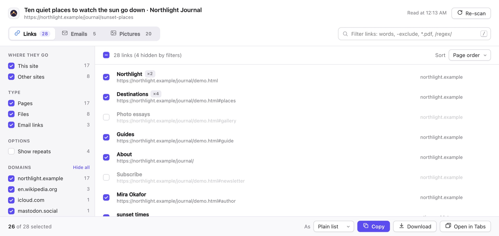
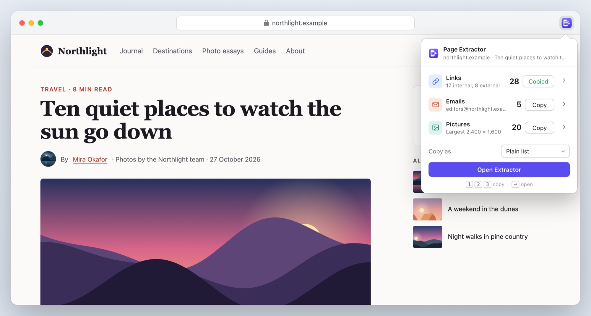
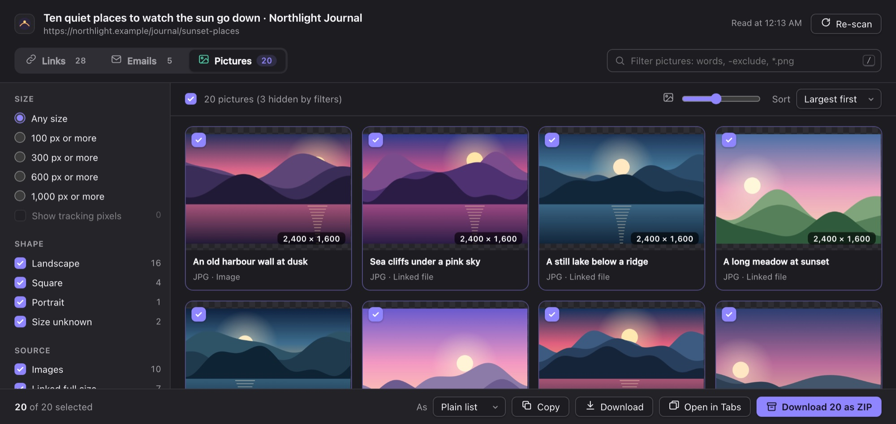
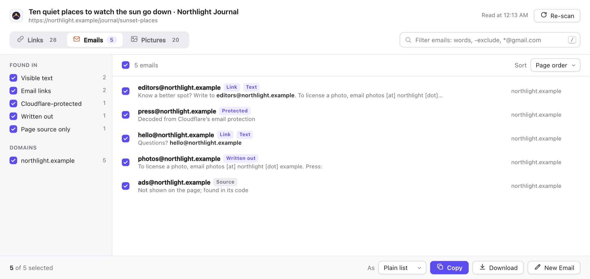
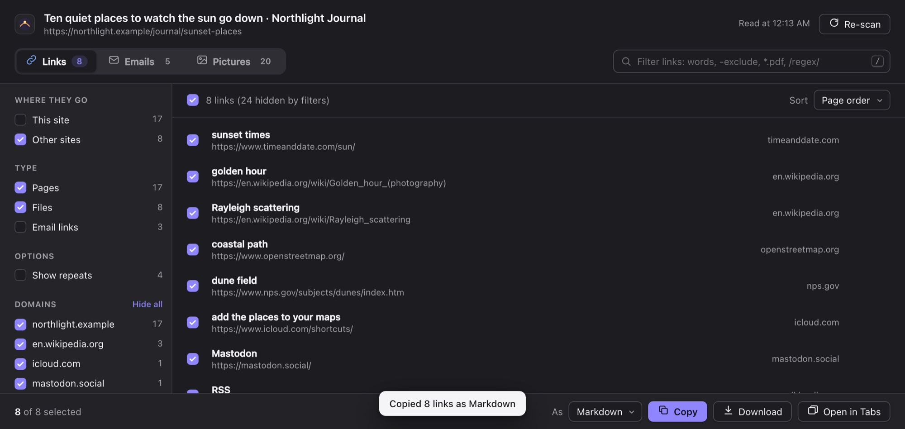

A Safari extension for Mac
Every link, email and picture. One click.
Page Extractor lists everything a web page links to, every email address on it and every picture it shows. Filter them, pick the ones you want, then copy or download them.
€1.99 one-time purchase · macOS 14 and Safari 18 or later · No data collected

Three steps, no setup
Nothing to configure and no website access to grant in advance.
1. Click the button
On any page, click Page Extractor in the toolbar or press ⌘⇧E. The counts appear at once.
2. Narrow it down
Filter by site, type, domain, size or words. Untick anything you don’t want.
3. Take it with you
Copy as a list, Markdown, HTML, CSV or JSON, open in tabs, or save the pictures as a ZIP.
Built for the jobs people actually do
Collecting sources, saving a gallery, building a contact list, checking a site’s links.
The popup
Copy in one click
Open Page Extractor and the counts are already there: links, emails and pictures, with what’s most useful about each. Copy a whole category without leaving the page.
- Press 1, 2 or 3 to copy, ↩ to open the full view
- Select text first to extract from just that part of the page
- Right-click any page for the same thing

Pictures
Every picture, largest first
Page Extractor finds the full-size version where it can: the largest image in a responsive set, the file a thumbnail links to, lazy-loaded pictures, CSS backgrounds and video posters.
- Filter by size, shape and format; hide tracking pixels
- Save the selection as one ZIP, with the sites’ own file names
- Pictures that can’t be fetched are listed, never silently dropped

Emails
Finds the emails others miss
Addresses in email links and in the text, of course. Also the ones sites try to hide: Cloudflare’s email protection, “name [at] site [dot] com”, and addresses only in the page’s code.
- Each address shows where it was found, with the sentence around it
- No false hits from picture names like logo@2x.png
- Start a new email to the selected addresses

Links
Your list, in your format
Links come in page order, each one once, with its text. Choose this site or other sites, pages or files, then copy the result the way your next tool wants it.
- Plain list, Markdown, HTML, CSV, JSON, or a template like
$text: $url - Links hidden behind redirects, as in search results, are unwrapped
- Filter with words,
-exclusions,*.pdfwildcards or/regex/

And all the small things
Private
Reads a page only when you click. No analytics, no account, nothing sent to the developer.
Light and dark
Follows your Mac’s appearance.
Keyboard first
/ to filter, ⌘A and ⌘C to select and copy, 1 2 3 to switch.
Remembers each site
Hide a site’s navigation domain once; it stays hidden next time.
Frames and components
Reads inside frames and web components, where many tools stop.
Fast on big pages
Thousands of links in a few dozen milliseconds.
Page Extractor for Safari
€1.99 once
- One-time purchase, no subscription
- Every feature included
- macOS 14 or later with Safari 18 or later
- Apple silicon and Intel
Prices in other countries are set by the App Store.
Questions
Which websites can it read?
Any web page you have open, when you click its button. Safari doesn’t let extensions read its own pages, such as Settings or the Start Page, or the App Store.
Why doesn’t it ask for access to all websites?
It doesn’t need it. Safari lets Page Extractor read the page in front of you at the moment you click its button, and nothing else. The only time it asks is when you download pictures as a ZIP: Safari then asks whether it may fetch them from the sites they’re on.
A page shows more pictures than Page Extractor found.
Many sites load pictures as you scroll. Scroll to the bottom of the page, then click Re-scan. Pictures drawn on a canvas, or inside a video, aren’t files and can’t be listed.
Where do downloads go?
To Safari’s download folder, usually Downloads. Lists are saved as text, Markdown, HTML, CSV or JSON files, and pictures as one ZIP.
What data does it collect?
None. Read the privacy policy.
Is there an iPhone or iPad version?
Not yet. Page Extractor is for Safari on the Mac.